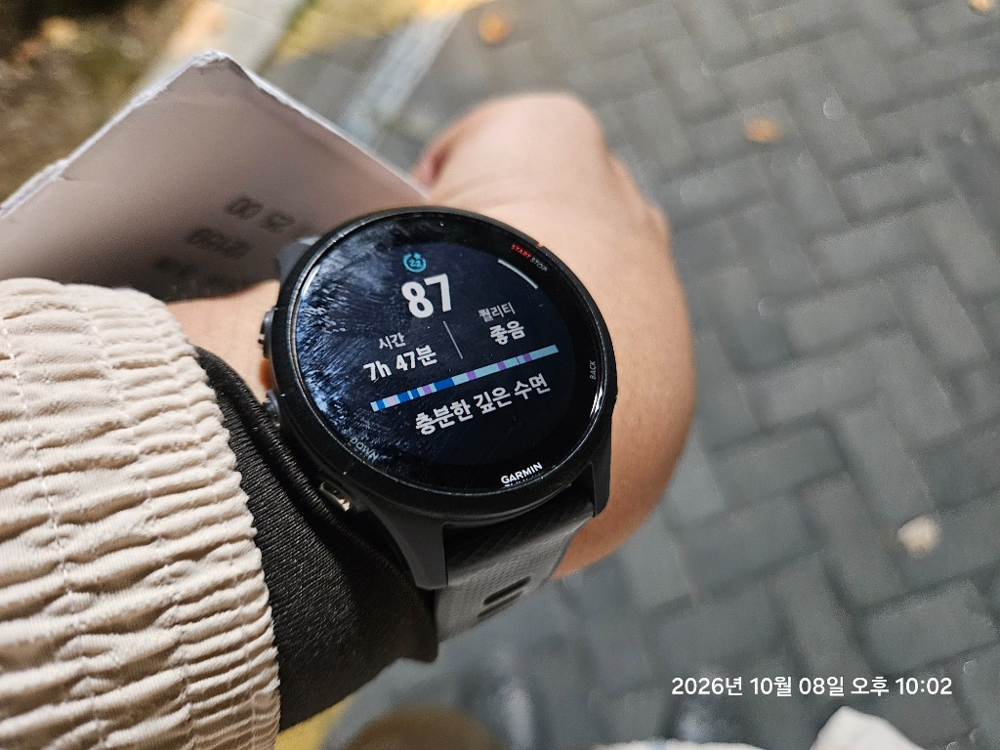
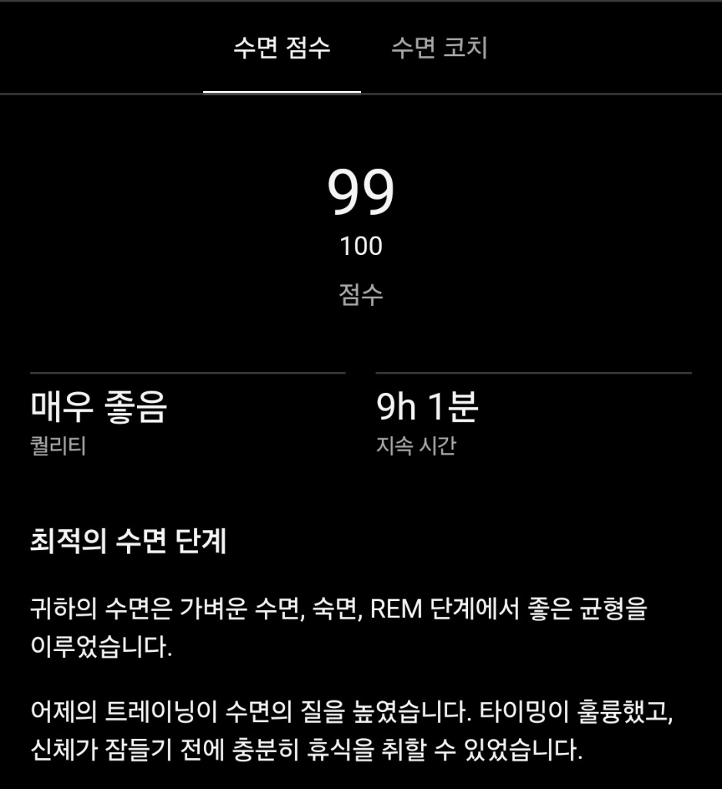

스마트워치 수면 점수와 회복: 잘 자야 달리기 실력이 느는 이유
- 달리기는 다리 근육을 살짝 지치게 만드는 과정이고, 실제로 체력이 튼튼해지는 건 밤에 푹 잠든 사이입니다.
- 스마트워치 수면 점수를 높이려면 오래 자는 것만큼 잠들기 3~4시간 전에 운동을 마쳐 몸을 식히는 것이 중요합니다.
- 아침 수면 점수가 낮을 때는 무리해서 빨리 뛰기보다 가볍게 뛰거나 하루 쉬는 편이 부상을 막는 데 좋습니다.
1. 쉬지 않고 매일 뛰면 오히려 실력이 떨어지는 이유
달리기를 처음 시작하면 "하루도 빠지지 않고 매일 뛰어야 빨리 늘지 않을까?" 하는 생각이 듭니다. 하지만 우리 몸은 [달리기(자극) → 피로 → 푹 자기(회복) → 전보다 튼튼해짐]이라는 순서로 강해집니다.
힘들게 뛰고 난 직후에는 몸이 지쳐서 일시적으로 체력이 떨어집니다. 이때 영양을 챙기고 밤에 푹 자면, 우리 몸은 다음번 달리기에도 거뜬히 버틸 수 있도록 근육을 전보다 더 튼튼하게 고쳐 놓습니다.
반대로 잠이 부족해 피로가 덜 풀린 상태에서 또 무리하게 뛰면, 몸이 회복할 틈이 없어 발바닥이나 무릎, 정강이에 통증이 생기기 쉽습니다.
2. 🏃 직접 재본 스마트워치 수면 점수: 87점과 99점의 차이
예전에는 아침에 일어났을 때 "오늘 좀 개운한가?" 하는 느낌만 믿었습니다. 그런데 스마트워치를 차고 자면서 수면 점수를 확인해 보니, 언제 뛰고 어떻게 자야 몸이 잘 풀리는지 눈에 보이기 시작했습니다.

• 잔 시간: 7시간 47분
• 특징: 깊은 수면 시간이 충분히 채워진 날입니다. 9km를 뛰고 난 뒤에도 몸이 무리 없이 회복을 시작한 안정적인 상태였습니다.

• 잔 시간: 9시간 1분
• 워치 코멘트: "어제의 트레이닝이 수면의 질을 높였습니다. 타이밍이 훌륭했고, 신체가 잠들기 전에 충분히 휴식을 취할 수 있었습니다."
💡 99점 기록에서 배운 점: '언제 뛰느냐'가 중요합니다
99점이 나온 날의 안내 문구를 보면 "운동 타이밍이 좋아서 잠들기 전에 몸이 충분히 쉬었다"고 나옵니다. 밤늦게까지 숨차게 뛰면 심장이 계속 빠르게 뛰고 몸도 뜨거워서 깊은 잠에 들기 어렵습니다. 꿀잠을 자고 싶다면 잠자리에 들기 최소 3~4시간 전에는 달리기를 마치고 몸을 차분히 식히는 시간을 갖는 게 좋습니다.
3. 잠자는 단계별 회복 역할: 왜 '깊은 잠'이 중요할까?
4. 아침 수면 점수에 맞춰 오늘 달리기 정하기
🚦 점수별 오늘의 달리기 추천
-
🟢 85점 이상:
몸이 아주 잘 풀린 상태입니다. 계획했던 대로 조금 빠르게 뛰는 훈련을 해도 좋습니다. -
🟡 70~84점:
무난한 컨디션입니다. 기록 욕심을 내기보다는 옆 사람과 대화할 수 있을 만큼 편하게 조깅하는 것을 추천합니다. -
🔴 70점 미만:
잠이 모자랐거나 피로가 쌓인 날입니다. 억지로 뛰기보다 가볍게 스트레칭을 하거나 하루 쉬는 것이 부상을 막는 지름길입니다.
📚 참고 학술 논문 및 공식 가이드라인
- Chinoy, E. D., Cuellar, J. A., Huwa, K. E., Jameson, J. T., Watson, C. H., et al. (2021). Performance of seven consumer sleep-tracking devices compared with polysomnography. SLEEP.
- Fullagar, H. H., Skorski, S., Duffield, R., Hammes, D., Coutts, A. J., & Meyer, T. (2015). Sleep and athletic performance: the effects of sleep loss on exercise performance, and physiological and cognitive responses to exercise. Sports Medicine.
📅 오늘 내 컨디션에 맞는 일주일 달리기 계획
RunAnalyz 훈련 플래너에서 내 체력과 쉬는 날에 맞춘 일주일 달리기 일정을 확인해 보세요.
📅 이번 주 7일 맞춤 훈련 플래너 확인하기🫀 무리하지 않고 회복하는 내 안전 심박수는?
나이만 넣는 단순 계산 대신, 아침에 잰 안정시 심박수를 반영해 내 몸에 딱 맞는 회복 구간을 확인해 보세요.
🫀 내 맞춤 심박존(Zone 1~5) 계산해 보기 ›